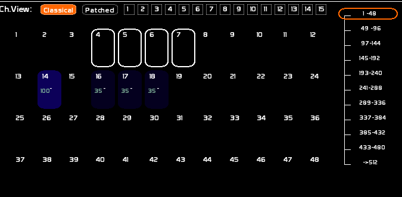
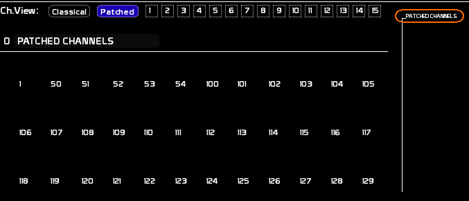

Table des matières
Présentation de l'espace dédié aux circuits
Il y a 3 modes d'affichage des circuits :
- La vue Classical (classique)
- La vue Patched (circuits patchés)
- Les vues personnalisables en Channel Views
Vous pouvez basculer de l'une à l'autre en utilisant les boutons [Classical], [Patched], ou en activant les petits carrés représentant les 15 vues personnalisables.
Mode Classical
La vue classique présente l'ensemble des circuits pilotables dans WhiteCat. Vous pouvez y sélectionner ou désélectionner tous les circuits. Vous pouvez naviguer dans cette vue grâce à la poignée.

Mode Patched
La vue patched présente l'ensemble des circuits patchés. Les circuits non patchés n'apparaissent pas et ne sont pas sélectionnables.

Mode Channel Views
Les Channel Views permettent de construire des vues personnalisées, et de « ranger » son espace de travail circuits à son goût.
Les 15 vues peuvent être éditées, à partir :
- d'une sélection de circuits faite dans l'espace [Classical]
- d'une mémoire
- d'un fader
- de l'ensemble des mémoires
- de l'ensemble des faders
- de l'ensemble mémoires / faders
Lorsque vous êtes en Channel View, vous ne pouvez pas sélectionner un circuit qui n'est pas dans les vues actives.